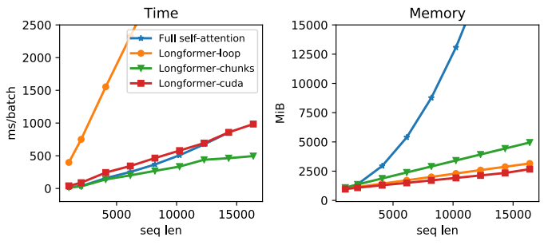

Longformer: Long Transformer
Transformer-based models are unable to process long sequences due to their self-attention operation, which has a time complexity of $O\left( n^{2} \right)$ where $n$ is the input length. Longformer stands for “Long Transformer” which is a encoder-side transformer with a novel attention mechanism that scales linearly with sequence length making it easy to process documents of thousands of tokens or longer. Longformer was proposed by Allen Institute in 2020 and published in their paper: Longformer: The Long-Document Transformer. The official code for this paper can be found in the official GitHub page of Allen Institute: allenai/longformer.
Attention Patterns
Longformer sparsifies the full-attention mechanism matrix according to an “attention pattern” specifying pairs of input locations attending to one another. According to the paper, there are four different patterns considered as shown below:
- Sliding Window:
This is a fixed-window attention surrounding each token. Using multiple stacked layers of such windowed attention results in a large receptive field. Given a fixed window size $w$, each token attends to $\frac{1}{2}w$ tokens on each side. The computation complexity of this pattern is $O\left( n \times w \right)$. In a transformer with $l$ layers, the receptive field size at the top layer is $l \times w$ (assuming $w$ is fixed for all layers).
- Dilated Sliding Window:
To further increase the receptive field without increasing computation, the sliding window can be “dilated” where the window has gaps of size dilation $d$. Assuming a fixed $d$ and $w$ for all layers, the receptive field is $l \times d \times w$, which can reach tens of thousands of tokens even for small values of $d$.

- Global Attention:
The windowed and dilated attention attend to subset of the sequence. That’s why they decided to add “global attention” on few pre-selected input tokens. This figure shows an example of a sliding window attention with global attention at a few tokens at custom locations.
Note:
In multi-headed setup of dialted window attention, using different dilation configurations per head improves performance by allowing some heads without dilation to focus on local context, while others with dilation focus on longer context.
Implementing Longformer’s dilated sliding widow attention requires a form of banded matrix multiplication (matrix multiplication where the output is all zero except certain diagonals) that is not directly supported in existing deep learning libraries like PyTorch/Tensorflow. So, they tried to implement it in three different ways:
Longformer-loop: Naive implementation using for-loops in PyTorch.
Longformer-chunks: Chunks $Q$ and $K$ into overlapping blocks of size $w$ and overlap of size $\frac{1}{2}w$, multiplies the blocks, then mask out the diagonals.
Longformer-cuda: is a custom CUDA kernel that they implemented using TVM (Tensor Virtual Machine).
They compared these different implementations according to time and memory and found out that longformer-chunks is the fastest.
They used small window sizes for the lower layers and increase window sizes as they moved to higher layers.
Also, they didn’t use dilated sliding windows for lower layers to maximize their capacity to learn and utilize the immediate local context. For the higher layers, they used a small amount of increasing dilation only on $2$ heads. This gives the model the ability to directly attend to distant tokens without sacrificing local context.
Character-level LM
Training Longformer is done over 5 phases where they started with a short sequence length of 2,048 and small window size, then the attention window size and sequence length across multiple is doubled on each subsequent phase while halving the learning rate till they ended with a length of 23,040 on the last phase.
Longformer implementation is based on the Transformer-XL found here with the memory mechanism disabled. They used relative position embeddings with sinusoidal weights. They used two different model sizes; each with a different set of hyper-parameters:
To compare longformer with previous character-level language modeling, they trained it on text8 & enwik8 benchmark, both contain 100M characters from Wikipedia split into 90M, 5M, 5M for train, dev, test respectively. Longformer outperforms all other models and achieves state-of-the-art results on both datasets:
Pre-training & Fine-tuning
Longformer was pre-trained using masked language modeling (MLM), where the goal is to recover randomly masked tokens in a sequence. Since MLM pre-training is expensive, they continued pre-training from the RoBERTa released checkpoint, and only making the minimal changes necessary to support Longformer’s attention mechanism. And since RoBERTa’s input is limited to $512$, they decided to copy them till it matches the input to longformer. After that, longformer was pre-trained on the following data:
Very Important Note:
Longformer’s attention pattern can be plugged into any pre-trained
transformer model without the need to change the model architecture.
After pre-training, longformer was fine-tuned on on six tasks resulting in a model that can process sequences up to 4,096 tokens long (8 times longer than BERT). These six tasks are QA (WikiHop, TriviaQA, HotpotQA), Coreference Resolution () and document classification (IMDB, Hyperpartisan):
LED
LED stands for “Longformer Encoder Decoder” which is a variant of the Longformer model that follows an encoder-decoder architecture similar to the original Transformer model; instead of an encoder-only Transformer architecture as the Longformer model. LED is intended for long sequence-to-sequence tasks such as text summarization.
Since pre-training LED is expensive, they initialized LED parameters from the BART following BART’s exact architecture in terms of number of layers and hidden sizes. The only difference is that they extend position embedding to 16K tokens (BART has only 1K tokens). Also, they initialized the new position embedding matrix by repeatedly copying BART’s 1K position embeddings 16 times.
Following BART, they released two model sizes, LED-base and LED-large, which respectively have 6 and 12 layers in both encoder and decoder stacks. LED was evaluated on the summarization task using the arXiv summarization dataset which focuses on long document summarization in the scientific domain. The following table shows that LED-large achieves state-of-the-art results, slightly outperforming BigBird.